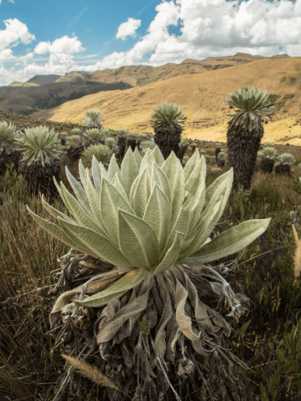
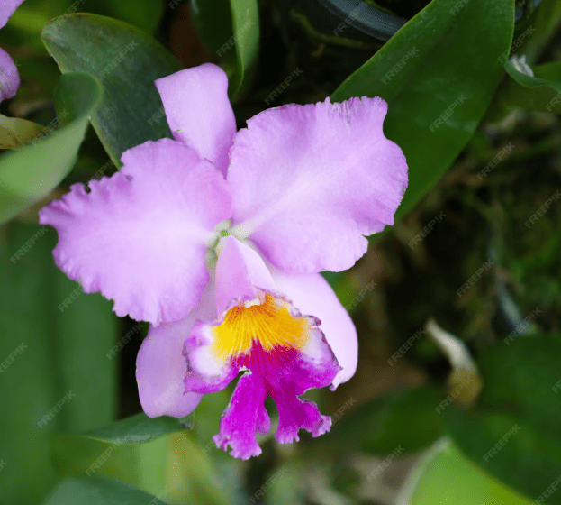
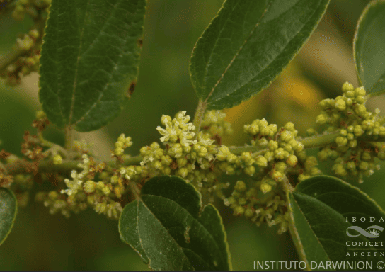

Frailejón
Espeletia grandiflora
Planta emblemática de los páramos colombianos que absorbe y regula el agua.
Es fundamental para el suministro de agua potable en ciudades cercanas.
Puede vivir más de 100 años y crece muy lentamente.
La región Andina se caracteriza por su biodiversidad.

Espeletia grandiflora
Planta emblemática de los páramos colombianos que absorbe y regula el agua.
Es fundamental para el suministro de agua potable en ciudades cercanas.
Puede vivir más de 100 años y crece muy lentamente.

Cattleya trianae
Flor nacional de Colombia reconocida por su belleza y diversidad.
Contribuye a la polinización y equilibrio de ecosistemas.
Colombia posee más de 4.000 especies de orquídeas.

Weinmannia tomentosa
Árbol nativo que crece en bosques andinos y protege el suelo.
Evita la erosión y conserva la humedad del suelo.
Es muy resistente a climas fríos.